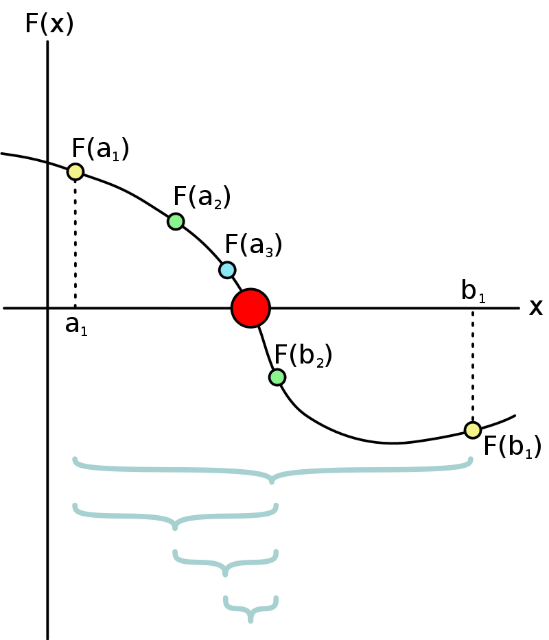

## Método de la bisección
import numpy as np
import matplotlib.pyplot as plt
def f(x):
return x**3 + 4*x**2 - 10
def biseccion(a, b, tol, max_iter):
if f(a)*f(b) < 0:
i = 0
while i < max_iter:
c = (a + b)/2
if f(c) == 0 or (b - a)/2 < tol:
return c
i += 1
if f(a)*f(c) > 0:
a = c
else:
b = c
return c
else:
print("No hay raíz en el intervalo")Método de la bisección
Método de la bisección para encontrar raíces de una ecuación
Sea una función \(f(x)\) continua en un intervalo \([a,b]\) tal que \(f(a)\) y \(f(b)\) tienen signos opuestos. Entonces existe al menos un número c en (a,b) tal que \(f(c)=0\).

El método de la bisección consiste en dividir el intervalo por la mitad y seleccionar el subintervalo que tiene signos opuestos en los extremos. Este proceso se repite hasta que el intervalo sea lo suficientemente pequeño. Note que este es un algoritmo iterativo, por ende, necesitamos algunos criterios de parada. ¿Cuáles criterios de parada podemos usar?
- Ejericio:
- Grafique la función \(f(x)=x^3-2x^2+3x-1\) en el intervalo \([0,1]\).
- ¿Qué criterios de parada podemos usar para este método?
- Note que esta función tiene una raíz en el intervalo \([0,1]\). Intente escribir un algoritmo para implementar el método de la bisección para encontrar la raíz de la función.
- Compare ese algoritmo con el siguiente:
Entrada Extremos \(a,b\) del intervalo, tolerancia \(TOL\), número máximo de iteraciones \(N_0\).
Salida Aproximación \(p\) de la raíz de \(f(x)\) tal que satisfaga el criterio de parada o un mensaje de error.
Paso 1. Tome \(i=1\); \[FA=f(a);\]
Paso 2. Mientras \(i\leq N_0\) haga paso 3-6
Paso 3. \(p=a+(b-a)/2\); (cálcule \(p_i\)) \[FP=f(p);\]
Paso 4. Si \(f(p)=0\) o \((b-a)/2<TOL\) entonces
Salida (\(p\)); (la salida es \(p_i\))
Paso 5. \(i=i+1\);
Paso 6. Si \(FA\cdot FP>0\) entonces \[a=p;\ \ FA=FP\] Si no \[b=p;\] Paso 7. Salida (Fracaso, el número máximo de iteraciones fue excedido)
Ejercicio 2:
Implemente el método de la bisección para encontrar la raíz de la función \(f(x)=x^3-2x^2+3x-1\) en el intervalo \([0,1]\) y genere una tabla como la siguiente
Iteración | \(a_n\) | \(b_n\) | \(p_n\) | \(f(p_n)\) | \(Error_{absoluto}\) |\(Error_{relativo}\)|
Teorema
Suponga que \(f\) es continua en \([a,b]\) y que \(f(a)\) y \(f(b)\) tienen signos opuestos. El método de bisección produce una secuencia de intervalos \(\{p_n\}\) que convergen a un número \(p\) tal que \(f(p)=0\), tal que \[|p_n-p|\leq \frac{b-a}{2^n}\]
Ejercicio compruebe esta afirmación numericamente